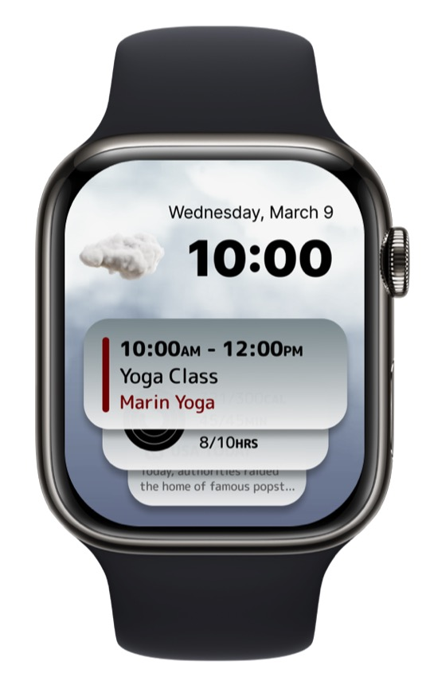
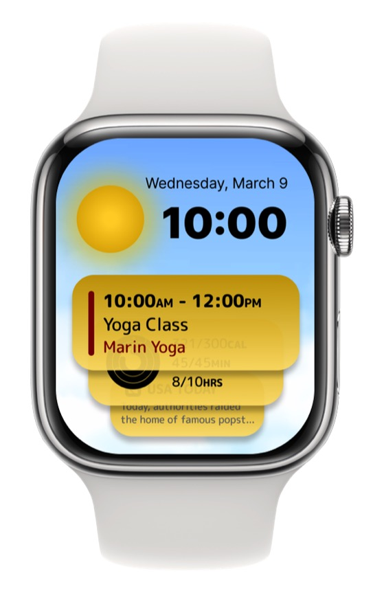
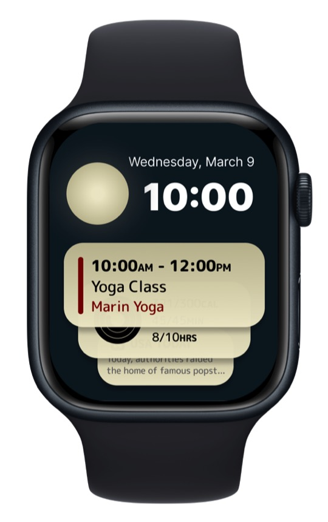

The project was initiated to create an innovative weather app interface specifically for the Apple Watch, focusing on intuitive design and user engagement. The challenge was to integrate comprehensive weather data within the constraints of the small screen, ensuring readability and ease of navigation.
The primary problem was the limited display area of the Apple Watch, which traditionally hindered the presentation of detailed weather information. Users often had to rely on multiple sources or apps to get a complete understanding of the day's weather, leading to a fragmented and sometimes frustrating experience.
The solution involved the development of a watch face that leverages a layered interface, combining current time, weather conditions, and user's calendar events in a seamless display. Smart use of colors and icons was employed to convey weather conditions and transitions throughout the day without overcrowding the screen. Interactive elements allow users to delve deeper into their schedule or weather forecasts as needed.
Testing revealed that users were able to understand their day's weather at a glance and appreciated the integration with their personal calendar. There was a significant reduction in the time taken to access weather and schedule information. User satisfaction scores increased, indicating a successful implementation of the design principles.


